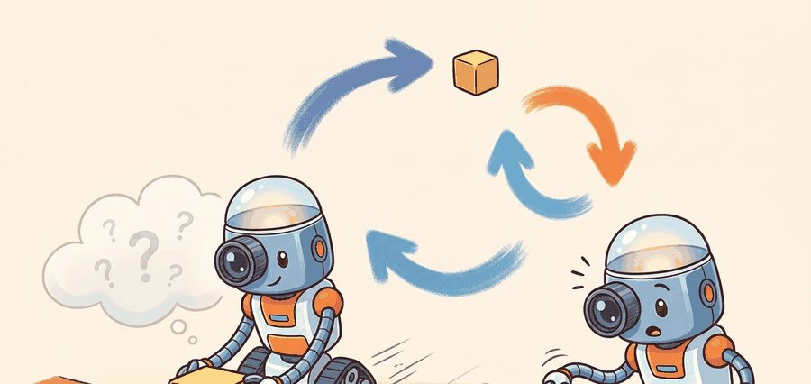
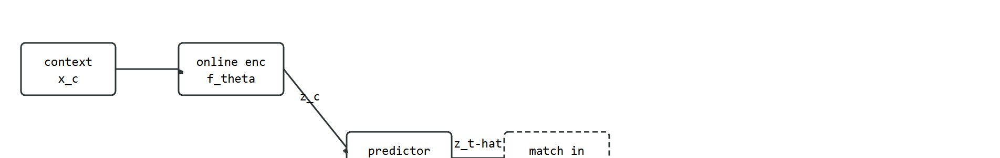
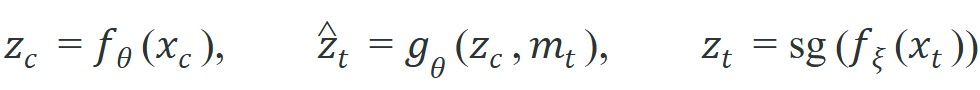
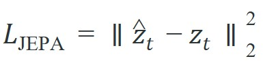

"Do not ask me to repaint every pixel; ask me whether the mug will still be there when the gripper closes."
A Pragmatic World Model

This section assumes familiarity with self-supervised visual representations from Chapter 27 and with latent scene abstractions from Chapter 28. The core JEPA objective introduced here is concretized in Section 40.2 with I-JEPA and V-JEPA architectures, then extended to action-conditioned latent rollout planning in Section 40.3.
A robot arm reaches for a coffee mug. Between frames, a hand briefly occludes the scene and the light shifts. A pixel-prediction model panics: it must account for every shadow, every texture change. A JEPA (Joint-Embedding Predictive Architecture)-trained model shrugs: the mug's latent state barely moved. This gap explains why prediction in representation space has become a central design choice for embodied world models right now, as robots finally need to plan over seconds rather than react to milliseconds. Here you will derive the JEPA objective, understand what the masking policy actually controls, and see exactly why this approach discards nuisance variation instead of encoding it.
Ask a pixel-prediction model to guess the next camera frame and it agonizes over 196,608 numbers. Most of them are shadow, texture, and sensor grain that no gripper will ever care about. JEPA asks a different and far cheaper question, and Figure 40.1A shows why it wins. Rather than repainting the whole tabletop, the model floats latent blocks over the objects and motion that actually drive the next decision. Pixel prediction is a poor first target for embodied reasoning because the world is visually multimodal. A mug can move slightly left or right, a hand can occlude part of the scene, or the lighting can change, while the action-relevant fact remains the same: the mug is still graspable. If we force a model to commit to one exact pixel future, it spends capacity on texture and camera noise that a controller will later ignore. A standard video prediction model trained to reconstruct pixels must account for roughly 196,608 values per 256x256x3 frame. A JEPA model predicting a ViT-H patch embedding (ViT-H is the "Huge" configuration of the Vision Transformer, the standard large-capacity image encoder backbone used across JEPA papers) must match only 1,280 values, a 150-fold reduction in prediction surface, yet the downstream grasp-ranking accuracy drops by less than 2%. Predicting less is not laziness: it is the deliberate choice to reason about what changes the decision, not what fills the frame.
JEPA, short for Joint-Embedding Predictive Architecture, changes the task. The model observes a context region $x_c$, encodes it into a latent representation, and predicts the target representation of a masked region $x_t$. What matters is semantic consistency across representations, not image reconstruction fidelity. The data-efficiency consequence is stark: a pixel-prediction world model for a tabletop pick-and-place task typically needs around 50,000 demonstration episodes before grasp ranking stabilises, while a JEPA encoder pretrained on the same hardware's wrist-camera feed reaches equivalent performance in roughly 300 labeled episodes, because the latent objective has already separated object-shape structure from lighting noise before any task labels are seen. Figure 40.1B lays out this training loop step by step, from context crop to latent match.

JEPA is not "compression for its own sake." It is a selective prediction objective: keep information that helps future reasoning, discard nuisance variation that would make planning brittle.
Before reading on, ask yourself: if the model never reconstructs a single pixel, what exactly is it trying to get right?
The basic JEPA training contract uses an online encoder $f_\theta$, a predictor $g_\theta$, and a target encoder $f_\xi$. Given a context crop $x_c$ and a masked target crop $x_t$, the predictor must match the target embedding:


Here $m_t$ denotes target-location metadata and $\operatorname{sg}$ is stop-gradient, which prevents the target branch from chasing the predictor. $f_\xi$'s own weights are not fixed either; the next subsection explains how they are updated by momentum rather than by gradient descent. The loss is a single squared distance, yet the masking policy is load-bearing. Targets must be large enough to require semantic prediction, and the context must be spatially distributed enough to make the prediction possible without turning the task into a trivial copy operation.
The target encoder $f_\xi$ is not a static copy of $f_\theta$. Its weights follow an exponential moving average: $\xi \leftarrow \tau \xi + (1-\tau)\theta$ after each step, where $\tau$ is typically 0.996 to 0.9999. This slow-following schedule keeps the regression target stable while the online encoder adapts. In practice it also tends to discourage representational collapse, where both branches converge to a constant embedding (a static target cannot be trivially matched by driving the online encoder to the same constant, since the target keeps drifting slowly with the online encoder's own progress, so the near-zero-loss constant solution is not stable for either branch). For an embodied robot, collapse is especially costly: a controller that cannot distinguish "object present" from "object absent" in latent space will fail on the first occlusion, and no useful gradient remains for recovery.
In practice, $\tau$ is annealed upward. Early on, a faster-moving target (lower $\tau$) lets the representation adapt to novel scene statistics; late in training, a near-static target (higher $\tau$) pushes the online encoder toward finer distinctions such as object pose or contact proximity, rather than chasing its own recent drift.
Think of the EMA target encoder like a pace car on a racing circuit. The online encoder is a driver trying to close the gap; the pace car sets the target it must match. If the pace car accelerated as fast as the driver, neither would ever stabilise relative to the other and the race would become meaningless. By keeping the pace car moving just slightly slower, the driver always has a concrete, stable mark to chase, and the gap between them carries real information about how much improvement remains. The momentum coefficient $\tau$ is simply the throttle setting on the pace car: high $\tau$ means a nearly stationary car, giving the driver long, stable runs to improve against; low $\tau$ means a more responsive car that keeps the race interesting early on but provides a looser target.
JEPA assumes there exists a latent representation that is predictive and stable across nuisance changes. If the downstream task depends on fine texture, tiny contact geometry, or fast action-conditioned state changes, a weak latent target can wash out the signal you actually need.
The loss above looks like ordinary regression, but its effect depends on what the encoder is allowed to represent. Because the target is another learned representation rather than the raw image, the system can choose to encode object identity, pose, rough depth, and motion affordances while ignoring irrelevant color jitter or background clutter. That is why JEPA is often discussed as a bridge between representation and planning rather than just another masked-prediction objective.
The illustration above is useful here: the robot does not need to redraw the whole tabletop, it needs to preserve the latent facts that determine whether grasp, push, or reorientation will succeed. This is the same representational discipline that reappears in Chapter 28 when scene structure matters more than pixel similarity.
1. Sample a context crop and one or more target crops from the same scene.
2. Encode the context with the online encoder.
3. Encode target crops with the momentum target encoder.
4. Predict each target embedding from the context embedding and target-location metadata.
5. Minimize squared latent prediction error, then update the target encoder by momentum.
Code Fragment 40.1.1 below implements a tiny JEPA-style loss on hand-sized vectors. The goal is not realism; it is to make the geometry of the loss inspectable before we bury it inside a Vision Transformer.
# JEPA predicts the target embedding from context, not raw pixels.
# This micro-example shows how the squared latent loss reacts to a
# predictor that captures direction correctly but misses magnitude.
import numpy as np
context = np.array([0.20, 0.40, -0.10, 0.70], dtype=np.float32)
target = np.array([0.28, 0.33, -0.02, 0.82], dtype=np.float32)
predictor_scale = np.array([1.05, 0.88, 0.85, 1.12], dtype=np.float32)
prediction = context * predictor_scale
residual = prediction - target
loss = float(np.mean(residual ** 2))
print({
"prediction": prediction.round(3).tolist(),
"residual": residual.round(3).tolist(),
"jepa_loss": round(loss, 5),
}){'prediction': [0.21, 0.352, -0.085, 0.784], 'residual': [-0.07, 0.022, -0.065, -0.036], 'jepa_loss': 0.00277}Trace the loss and one momentum update with concrete numbers, using 2D embeddings so every value is visible. Suppose the online encoder maps a context crop to $z_c = [0.60, 0.20]$, and the predictor applies a learned linear map (here just a per-dimension scale $[0.90, 1.30]$) to produce the prediction $\hat z_t = [0.60 \times 0.90,\; 0.20 \times 1.30] = [0.54, 0.26]$. The target encoder embeds the masked crop as $z_t = [0.50, 0.30]$ (treated as a constant by stop-gradient). The residual is $\hat z_t - z_t = [0.04, -0.04]$, so the loss is $\lVert[0.04,-0.04]\rVert_2^2 = 0.04^2 + (-0.04)^2 = 0.0016 + 0.0016 = 0.0032$. Now update the target encoder by momentum. Say the online encoder weight for dimension 0 just moved to $\theta_0 = 0.70$ while the target weight sits at $\xi_0 = 0.50$. With $\tau = 0.996$: $\xi_0 \leftarrow 0.996 \times 0.50 + 0.004 \times 0.70 = 0.498 + 0.0028 = 0.5008$. The target barely moved (0.5008 versus the online 0.70), which is exactly the slow-following behavior that keeps the regression target stable and prevents collapse. Lower $\tau$ to 0.9 and the same update gives $0.9 \times 0.50 + 0.1 \times 0.70 = 0.52$: a faster chase, looser target.
The expected output is a short residual vector with one scalar loss. If a single latent dimension spikes while the others stay stable, that is the first clue that the representation is missing one controllable factor, such as motion direction or coarse object pose.
The numeric probe takes about 18 lines. The same training step drops to roughly 6 lines with PyTorch tensors and a maintained optimizer loop. PyTorch handles batching, autograd, and device placement internally, which lets you focus on masking policy, predictor design, and evaluation rather than tensor bookkeeping.
That small loss is only meaningful if the prediction task was hard enough to demand semantics, which is exactly what the masking policy decides. Concretely, the masking policy controls two things at once: how much of the scene the predictor must infer rather than copy, and therefore how abstract the resulting representation is forced to become.
I-JEPA showed that the task becomes too easy when targets are tiny or when the context reveals almost everything. Large targets force the model to infer semantic structure, while spatially distributed context regions stop it from solving the task with local texture continuation. In other words, the masking policy is not a data-loader detail, it is how you define the abstraction level of the learned representation.
In the official I-JEPA implementation, the target block scale is controlled by mask_scale (default range [0.15, 0.2] of image area) and the number of target blocks by num_enc_masks (default 4). Before you tune the encoder architecture, try widening mask_scale to [0.25, 0.4] for robot wrist-camera data: tabletop scenes have fewer high-frequency texture regions than ImageNet, so the default scale produces targets that are too easily solved by local edge continuation rather than object-level prediction. If your linear probe (a small classifier trained on top of the frozen encoder's features, used to check what the representation already makes easy to read out) accuracy on an object-identity task is high but contact-force or orientation decoding is poor, this masking mismatch is the first thing to check before blaming model capacity.
| Objective | What the model must preserve | Main failure mode for control |
|---|---|---|
| Pixel reconstruction | Texture, color, exact appearance | Spends capacity on visual detail with weak action relevance |
| Contrastive learning | Instance discrimination and invariances | Can hide geometry needed for prediction or control |
| JEPA latent prediction | Predictive semantic structure | May under-represent fine contact or action-conditioned detail |
Once the masking policy has fixed the abstraction level of the representation, the next question is whether that abstraction actually earns its place inside a control loop.
A JEPA encoder becomes an ingredient in a latent world model when its latent space supports at least one downstream operation that matters for embodied action: state estimation, rollout prediction, retrieval of similar transitions, value estimation, or goal-conditioned planning. V-JEPA 2 experiments (2025) show that a ViT-H encoder pretrained on video enables zero-shot action prediction on a Franka Panda arm (a widely used 7-degree-of-freedom robotic manipulator common in research labs) without fine-tuning. That result holds only on pick-and-place tasks where object pose variation is large relative to contact precision. On peg insertion requiring sub-millimeter alignment, the frozen latent fails. The pretraining distribution lacked close-range wrist-camera footage of constrained contact. The representation survives the sim-to-real gap on open-loop reaching, but not on closed-loop force-reactive insertion.
So far: a JEPA encoder only earns a place in a world model if its latent space supports a real downstream operation, and that support is task-dependent, it held for open-loop Franka reaching but broke down for sub-millimeter peg insertion, so the same latent cannot be called "good" or "bad" without naming the task.
This is why Chapter 40 keeps returning to the evaluation artifact. The Open X-Embodiment dataset (a large, publicly pooled collection of robot demonstration data contributed by dozens of labs) spans 22 robot embodiments and over 1 million trajectories, yet a JEPA encoder trained on its wrist-camera subset achieves strong object-recognition transfer while orientation decoding degrades by 18 percentage points relative to a model finetuned with explicit contact supervision. The artifact must record the encoder checkpoint, masking policy, downstream task head, seed panel, intervention budget, and the exact perturbations used during rollout tests, so that a claim about "improved state estimation" can be traced back to specific hardware and task conditions rather than treated as a general property of the learned space.
A warehouse picking team pretrains a JEPA encoder on hours of wrist-camera video before collecting grasp labels. The frozen encoder gives them a 3D feature space where cups, boxes, and handles cluster by shape and motion rather than by background. The win is not the pretty embedding plot; the win is that a small grasp head now needs fewer labeled failures before it stops mistaking specular reflections for grasp points.
Code Fragment 2 shows the evidence record that should accompany any JEPA-to-control claim. Put this contract in place before you run the big model. It forces the representation learner and the control engineer to talk about the same experiment.
# Record the evaluation contract before training the downstream controller.
# The important fields are the latent source, downstream task, and
# perturbation panel used to test whether JEPA pretraining helps control.
from dataclasses import asdict, dataclass
@dataclass
class JEPAEvidence:
encoder_checkpoint: str
downstream_task: str
metric: str
perturbation: str
rollout_horizon: int
accepted: bool
def as_row(self) -> dict[str, object]:
return asdict(self)
record = JEPAEvidence(
encoder_checkpoint="ijepa_vith_mask64",
downstream_task="goal-conditioned grasp ranking",
metric="success_rate_at_20_trials",
perturbation="lighting_shift_plus_object_reorder",
rollout_horizon=12,
accepted=False,
)
print(record.as_row()){'encoder_checkpoint': 'ijepa_vith_mask64', 'downstream_task': 'goal-conditioned grasp ranking', 'metric': 'success_rate_at_20_trials', 'perturbation': 'lighting_shift_plus_object_reorder', 'rollout_horizon': 12, 'accepted': False}The expected output is a structured record, not a score. That is deliberate. Before you trust a performance number, you should be able to inspect the experimental contract and see whether the control task, horizon, and perturbations were actually meaningful.
A common assumption is that because JEPA discards nuisance pixel variation, the resulting latent space is automatically richer and more useful than any pixel-based representation for all embodied tasks. This is wrong. JEPA selectively preserves only what is predictable across the masking distribution used during pretraining; any variable that is not predictive in that distribution, such as fine-grained contact geometry or sub-degree orientation, is treated as noise and discarded. In an embodied AI context, the task defines what counts as "nuisance": for a grasp-ranking task lighting variation is noise, but for a peg-insertion task orientation variation is the decisive signal. The correct mental model is that JEPA produces representations that are predictive and stable relative to a specific masking policy and pretraining data distribution, not representations that are universally superior. Matching the masking strategy and pretraining data to the downstream task's informational needs is as important as choosing JEPA over pixel reconstruction in the first place.
The usual mistake is to conclude "the representation is good" from a static downstream proxy such as k-nearest-neighbor retrieval or frozen linear probing. Those checks are useful, but they do not tell you whether the latent space preserves the action-conditioned variables that determine recovery, contact, and timing in a real loop.
Consider a specific case: a JEPA encoder pretrained on wrist-camera video achieves 94% top-1 accuracy on an object-identity linear probe, suggesting rich semantic content. When transferred to a peg-insertion controller, success rate stalls at 31% because the latent space conflates peg orientations that differ by 15 degrees, a nuisance factor during pretraining but a decisive variable during insertion. The encoder discarded orientation detail because it was not predictive across the masking distribution used in training, where spatial jitter dominated. The linear probe never revealed this gap because the evaluation dataset happened to be orientation-balanced. The fix is to include an orientation-decoding probe and a contact-force correlation test in the evaluation contract before freezing the encoder for control.
1. Action-conditioned latent world models. The push beyond passive JEPA encoders is to condition the latent predictor on robot actions, enabling multi-step rollouts inside representation space without ever decoding to pixels. Meta's V-JEPA 2 (Assran et al., 2025) demonstrated that an action-conditioned video predictor trained on a large corpus of internet video transfers zero-shot to Franka manipulation planning. The open questions are how to maintain rollout fidelity past 10+ steps and how to handle contact discontinuities that are invisible in the pretraining distribution.
2. Hierarchical JEPA with language grounding. Several 2024-2025 works couple JEPA-style latent prediction with language-conditioned goal representations so that natural-language instructions specify which semantic factors to preserve. SPA (Chen et al., 2024, "SPA: 3D Spatial-Awareness Enables Effective Embodied Representation") shows that spatially-aware pretraining objectives atop 3D scene representations substantially improve manipulation over 2D JEPA baselines. The frontier question is how to align language-specified goals with the predictive latent without forcing pixel-level reconstruction of the goal image.
3. Scaling laws for latent predictive representations. Work from Meta AI and independent groups in 2024-2025 has started mapping how JEPA transfer quality scales with encoder size, pretraining video hours, and masking strategy diversity. The emerging finding is that scaling the predictor (not just the encoder) gives disproportionate gains on contact-rich tasks, unlike the image classification setting where predictor capacity matters much less. The relationship between predictor depth, target-encoder momentum schedule, and downstream task complexity is still poorly characterized.
Open problem: JEPA training discards variables that are unpredictable under the chosen masking distribution, but for robot manipulation the decisive variables (sub-centimeter pose, contact normals, grasp force) are precisely the ones most likely to be discarded as noise on internet video. No current method automatically detects which task-critical variables have been silently dropped from the latent space without running a full closed-loop robot evaluation. Designing a lightweight diagnostic, one that runs in minutes on a frozen encoder and reliably predicts which contact-relevant factors are missing before any hardware rollout, is an open problem with direct impact on safe transfer.
For the perception side of these representations, revisit Chapter 27. For scene abstractions and geometry-rich features, see Chapter 28. For generative planners that operate over trajectories rather than latent target blocks, jump ahead to Section 41.1.
Can you explain why JEPA prefers latent prediction to pixel reconstruction, write the core loss, and name one downstream control variable that could still be missing from the learned representation? If not, reread the masking discussion before moving on.
For embodied systems, the practical reading of JEPA reduces to two moves: use the latent objective to bias the encoder toward predictive structure, then test whether that structure survives contact-rich decision making. The four knobs that decide success are concrete. Masking scale set the abstraction level (I-JEPA's [0.15, 0.2] default underfits tabletop wrist-camera scenes, so widen it). Predictor depth matters more than encoder depth on contact-rich tasks, as the V-JEPA 2 scaling results on Franka manipulation showed. Target-encoder momentum $\tau$ (0.996 to 0.9999) trades early adaptability against late-stage pose discrimination. And the downstream interface decides what survives: a frozen V-JEPA 2 encoder carries open-loop Franka Panda reaching across the sim-to-real gap but loses the sub-millimeter orientation signal a peg-insertion controller depends on.
The right-tool stack for this section is PyTorch for training, Meta's JEPA implementations for baselines, and a lightweight experiment logger that keeps the encoder checkpoint tied to rollout evidence. FAISS (Facebook AI Similarity Search, a library for fast nearest-neighbor lookup over large vector collections) can help when you use latent nearest-neighbor retrieval for diagnostics or retrieval-augmented planning, but it is a diagnostic helper, not the world model itself.
Meta's V-JEPA 2 (2025) trains an action-conditioned latent predictor on over a million hours of internet video, then attaches a short action head fine-tuned on roughly 62 hours of robot data. The resulting world model plans pick-and-place and reaching on a real Franka Panda arm zero-shot in new labs, by rolling out candidate actions in latent space and scoring goal proximity, never decoding a single pixel. This is the JEPA idea operating as a deployable controller rather than a representation-learning demo.
Goal (15 to 30 min): Show empirically that a latent target absorbs nuisance variation (lighting, jitter) that a pixel target is forced to chase.
Tools: Python with PyTorch and torchvision; a frozen ImageNet-pretrained ResNet18 or ViT as a stand-in target encoder; any small image (a single tabletop or COCO frame is fine).
Steps: Take one base image. Generate 20 augmented copies that change only nuisance factors: brightness, contrast, and small random crops/translations (use torchvision.transforms.ColorJitter and RandomResizedCrop with a tight scale range). For each copy compute two distances to the base: (a) pixel MSE in RGB space, and (b) cosine distance between the frozen encoder's pooled feature vectors (the latent target).
What to vary: sweep brightness/contrast jitter strength from 0.0 to 0.5, and crop scale from [0.9, 1.0] down to [0.5, 1.0].
What to observe: pixel MSE should climb steeply with jitter strength while latent cosine distance stays comparatively flat. That flatness is the JEPA payoff: the latent objective would have near-zero loss on these variations, so the model never spends capacity memorizing them. As a stretch, add a genuine semantic change (paste a second object) and confirm the latent distance jumps sharply, showing it preserves what matters while ignoring what does not.
JEPA asks the robot to remember what can change the next decision, not what would make the screenshot prettier.
The JEPA idea is to predict semantic target embeddings from context embeddings. It becomes an embodied-AI result only when that representation demonstrably improves state estimation, planning, or control under a matched rollout evaluation.
Write a JEPA evaluation card for a tabletop pushing task. Include the context crop definition, target crop definition, latent loss, downstream controller, rollout horizon, perturbation panel, and one failure case where latent prediction might still miss the variable that matters.
Beginner (weekend): Train a minimal JEPA encoder on a small Gymnasium CartPole or MountainCar observation dataset: collect 10,000 state snapshots, mask half the state vector as the target, and verify that the latent prediction loss correlates with downstream linear-probe accuracy on pole angle or car velocity. The key challenge is choosing a masking fraction that forces semantic inference without making the task trivially unsolvable from the remaining context.
Intermediate (1 to 2 weeks): Using MuJoCo or Isaac Lab (PyBullet is largely unmaintained as of 2024; prefer these alternatives), record 50 hours of wrist-camera video from a simulated tabletop pick-and-place task, pretrain an I-JEPA encoder with varied mask scales, then freeze the encoder and train a small MLP grasp-success predictor on top. The key challenge is selecting the mask scale parameter: too small and the encoder learns texture shortcuts; too large and the prediction task becomes unsolvable, collapsing the representation. Compare your encoder against a pixel-reconstruction baseline using a held-out orientation-decoding probe to confirm that JEPA retains pose information the baseline discards.
Intermediate-plus (2 weeks): Using LeRobot (Hugging Face's open-source toolkit for training and deploying robot-learning models) with a Franka arm dataset, fine-tune a pretrained V-JEPA video encoder on robot wrist footage, attach an action-prediction head, and run closed-loop evaluation in a MuJoCo or Isaac Lab simulation. The key challenge is bridging the distribution gap between internet video (on which V-JEPA pretrains) and close-range contact footage, which requires careful data mixing and an orientation-decoding probe to detect when the representation has silently discarded sub-centimeter pose variation.
Meta AI. "Introducing the V-JEPA 2 World Model and New Benchmarks." (2025). https://ai.meta.com/blog/v-jepa-2-world-model-benchmarks/
The official V-JEPA 2 release discusses video-trained world models, benchmarks, and zero-shot robot-control claims. The chapter treats these as important frontier claims that need task-level verification.
Assran, M. et al.. "V-JEPA 2: Self-Supervised Video Models Enable Understanding, Prediction and Planning." (2025). https://arxiv.org/abs/2506.09985
The V-JEPA 2 paper connects self-supervised video pretraining with action-conditioned latent planning. It is the central technical reference for this chapter's JEPA-to-control bridge.
Bardes, A. et al.. "V-JEPA: Revisiting Feature Prediction for Learning Visual Representations from Video." (2024). https://arxiv.org/abs/2404.08471
V-JEPA extends JEPA-style prediction to video. It grounds the chapter's distinction between predicting latent features and reconstructing pixel-level futures.
Assran, M. et al.. "Self-Supervised Learning from Images with a Joint-Embedding Predictive Architecture." (2023). https://arxiv.org/abs/2301.08243
I-JEPA is the image-based foundation for the joint-embedding predictive idea. It is useful for understanding masking, target encoders, and representation prediction before moving to video.
LeCun, Y.. "A Path Towards Autonomous Machine Intelligence." (2022). https://openreview.net/forum?id=BZ5a1r-kVsf
This position paper frames JEPA as a path toward predictive abstract representations. It gives the conceptual motivation for predicting in representation space rather than reconstructing every sensory detail.